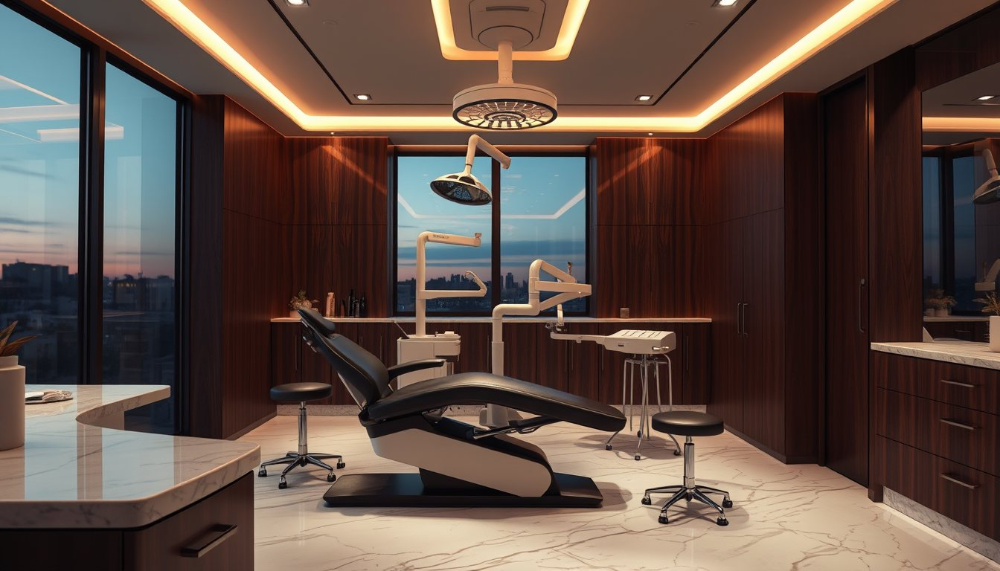

Tedaviniz hakkında önceden bilin, rahat gelin.
Dijital ölçü, implant, dolgu, kanal tedavisi, gülüş tasarımı ve beyazlatma hakkında sade bilgiler; randevu için tek dokunuş.
 Temsilî görsel · yayında kliniğinizin fotoğrafları
Temsilî görsel · yayında kliniğinizin fotoğraflarıHangi tedavi, nasıl ilerler?
Başlıklar Instagram'daki öne çıkanlarınızdan alındı. Metinler genel bilgilendirmedir; yayındaki metinleri siz onaylarsınız. Sayfada fiyat, kampanya, hasta yorumu ya da öncesi-sonrası görsel yer almaz.
Dijital ölçü
Ölçü, macun yerine ağız içi tarayıcıyla alınır. Görüntü ekranda birlikte incelenir.
İmplant
Eksik diş yerine çene kemiğine yerleştirilen yapay kök. Uygunluk muayene ve röntgenle değerlendirilir; süreç kişiye göre değişir.
Dolgu
Çürüğün temizlenip dişin diş renginde malzemeyle onarılması. Çoğu zaman tek seansta tamamlanır.
Kanal tedavisi
Dişin iç kısmındaki iltihaplı dokunun temizlenmesi ve kanalların doldurulması. Dişi korumayı amaçlar.
Gülüş tasarımı
Diş şekli, rengi ve dizilimi yüz oranlarıyla birlikte planlanır; seçenekler muayenede konuşulur.
Beyazlatma
Diş renginin açılması için uygulanan işlem. Uygunluk ve yöntem muayenede belirlenir.
Gelmeden bilmeniz gerekenler.
- Kullandığınız ilaçları ve varsa sağlık raporlarınızı yanınıza alın.
- Daha önce çekilmiş diş röntgeniniz varsa getirin.
- Muayenede ağız içi incelenir, gerekirse röntgen çekilir, tedavi seçenekleri konuşulur.
- Randevu saatinizden birkaç dakika önce gelmeniz yeterli.

İki dokunuşla randevu talebi.
Konuyu ve uygun zamanı seçin; WhatsApp mesajı hazır açılır. Klinik uygun saati size yazar.
- Telefon
- 0543 450 20 00
- E-posta
- dtbatuhanbas@gmail.com
- Adres
- Yenişehir Mah., Şehit Öğretmen Yusuf Batur Cad. No:63/1, Merkezefendi / Denizli · Haritada aç